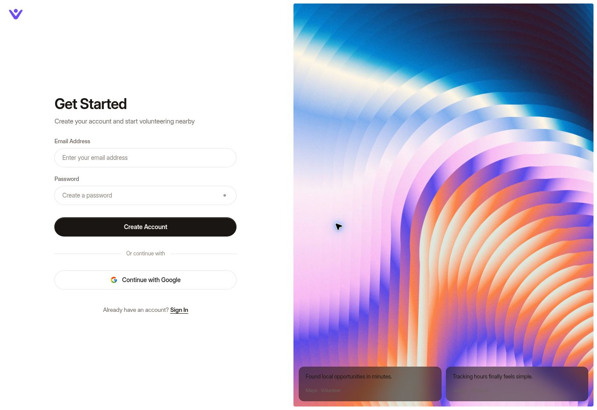

Find somewhere to help.
Discover local volunteer opportunities in one place, so the search is easier to start.
Volunteen brings volunteer opportunities, shift bookings, and hour records into one place. Students can find somewhere to help, arrange a shift, and keep a verified record of the time they’ve put in.
Visit Volunteen
Discover local volunteer opportunities in one place, so the search is easier to start.
Choose a volunteer shift and make a plan to take part. Booking sits alongside the opportunity details.
Verified hour records help students keep track of their volunteering without piecing together separate notes and messages.
Finding an opportunity and recording the hours should be the easy parts of volunteering.